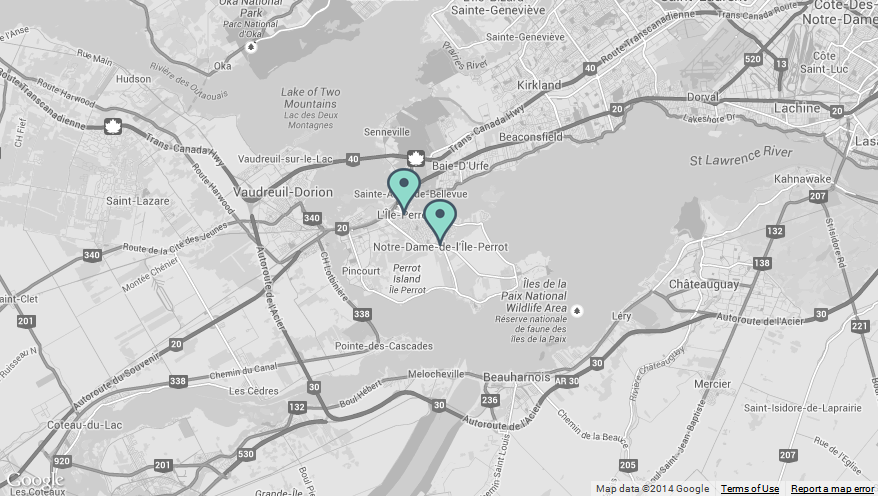
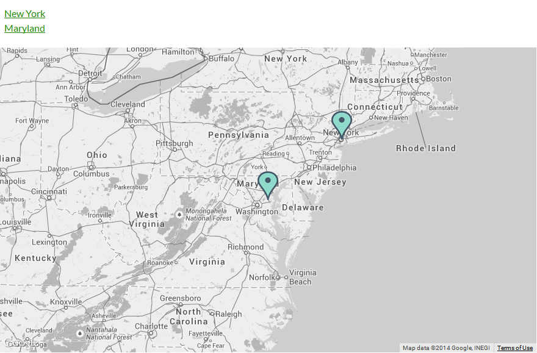

“Responsive Styled Google Maps - Wordpress Plugin” Documentation by “greenline” v2.24
“Responsive Styled Google Maps” Wordpress Plugin
Last Updated: 30 October 2014
By: greenline
Email: greenline@yava.ro
Thank you for purchasing my plugin. If you have any questions that are beyond the scope of this help file, please feel free to email via my user page contact form here. Thanks so much!
Table of Contents
- Online documentation, more examples and help
- Installation
- Quick start guide
- Configure the map
- Sources and Credits
- Version history
B) Installation - top
- Download on your computer the ZIP file from codecanyon.net
- Open your WP admin panel and go to Plugins -> Add New -> Upload the ZIP file from step 1.
- Activate the plugin.
- Open any page, post, custom post type or text widget and create your map with [res_map address="your_address"] shortcode.
- To customize the map, add parameters like this: [res_map parameter1="value" parameter2="value"] or go to your wordpress admin panel, navigate to Settings -> Responsive Styled Maps Helper menu item. It will open the plugin's panel like in the image below, where you can customize various settings.
C) Quick start guide - top
After you download and activate the plugin, just open in edit mode any post, custom post type, page or widget and write this simple shortcode to generate a map in that place: [res_map address="street, city, country"]. To customize the map, go to your wordpress admin panel, navigate to Settings -> Responsive Styled Maps Helper menu item. It will open the plugin's panel, where you can customize various settings.
EXAMPLES:
1) Map with two markers (two addresses); they are separated with the | (pipeline) symbol:
[res_map address="L'ﾃ四e-Perrot, QC, Canada | Notre-Dame-de-l'ﾃ四e-Perrot, QC, Canada" description="L'ﾃ四e-Perrot, QC, Canada | Notre-Dame-de-l'ﾃ四e-Perrot, QC, Canada" directionstext="(directions to our address)" icon="green | green" style="2" pancontrol="no" scalecontrol="no" typecontrol="no" streetcontrol="no" zoom="11" zoomcontrol="no" draggable="yes" scrollwheel="no" width="880px" height="500px" maptype="roadmap" popup="no" center="" refresh="no"]

2) Map with address given with latitude/longitude and zoom=8:
[res_map address="45.95115,-102.509769" description="First line of text" directionstext="(directions to our address)" icon="yellow" style="14" pancontrol="no" scalecontrol="no" typecontrol="no" streetcontrol="no" zoom="8" zoomcontrol="no" draggable="yes" scrollwheel="no" width="880px" height="500px" maptype="roadmap" popup="no" center="" refresh="no"]
3) A black & white map:
[res_map address="Yeronga QLD 4104, Australia" description="Yeronga QLD 4104, Australia {br} Phone: 0040 752 235 756" directionstext="(directions to our address)" icon="black" style="24" pancontrol="no" scalecontrol="no" typecontrol="no" streetcontrol="no" zoom="14" zoomcontrol="no" draggable="yes" scrollwheel="no" width="880px" height="500px" maptype="roadmap" popup="yes" center="" refresh="no"]
4) Format the description inside the popup on multiple lines and add a logo to the popup (if you wish to display the text in the info popup window on multiple lines, please use the {br} expression):
[res_map address="Yeronga QLD 4104, Australia" description="<img src='http://yava.ro/images/company.png'> {br} Yeronga QLD 4104, Australia {br} Phone: 0040 752 235 756" directionstext="(directions to our address)" icon="http://yava.ro/icons/car.png" style="22" pancontrol="no" scalecontrol="no" typecontrol="no" streetcontrol="no" zoom="14" zoomcontrol="no" draggable="yes" scrollwheel="no" width="880px" height="500px" maptype="roadmap" popup="yes" center="" refresh="no"]

5) Change the icon color:
[res_map address="Yeronga QLD 4104, Australia" description="Yeronga QLD 4104, Australia {br} Phone: 0040 752 235 756" directionstext="(directions to our address)" icon="blue" style="25" pancontrol="no" scalecontrol="no" typecontrol="no" streetcontrol="no" zoom="14" zoomcontrol="no" draggable="yes" scrollwheel="no" width="100%" height="500px" maptype="roadmap" popup="yes" center="" refresh="no"]

6) Change the map style:
[res_map address="Yeronga QLD 4104, Australia" description="Yeronga QLD 4104, Australia {br} Phone: 0040 752 235 756" directionstext="(directions to our address)" icon="red" style="28" pancontrol="no" scalecontrol="no" typecontrol="no" streetcontrol="no" zoom="18" zoomcontrol="no" draggable="yes" scrollwheel="no" width="100%" height="500px" maptype="roadmap" popup="yes" center="" refresh="no"]

7) Use a custom marker icon:
[res_map address="Yeronga QLD 4104, Australia" description="Yeronga QLD 4104, Australia {br} Phone: 0040 752 235 756" directionstext="(directions to our address)" icon="http://yava.ro/icons/car.png" style="30" pancontrol="no" scalecontrol="no" typecontrol="no" streetcontrol="no" zoom="18" zoomcontrol="no" draggable="yes" scrollwheel="no" width="880px" height="500px" maptype="roadmap" popup="yes" center="" refresh="no"]
8) Show/hide the controls. Every other control in the map can be shown / hidden by specifying its corresponding parameter. So that you can customize your map in every possible way: you have full control on what to show on the map.
[res_map address="Yeronga QLD 4104, Australia" description="Yeronga QLD 4104, Australia {br} Phone: 0040 752 235 756" directionstext="(directions to our address)" icon="orange" style="22" pancontrol="yes" scalecontrol="yes" typecontrol="yes" streetcontrol="yes" zoom="19" zoomcontrol="yes" draggable="yes" scrollwheel="yes" width="880px" height="496px" maptype="terrain" popup="yes" center="" refresh="no"]

9) How to use the shortcode in a theme:
Just use echo do_shortcode statement in any post, page or custom page template, like this:
<?php echo do_shortcode( '[res_map address="37.532599,25.191723" description="<img src=\'http://yava.ro/images/company.png\'> {br} Yeronga QLD 4104, Australia {br} Phone: 0040 752 235 756" directionstext="(directions to our address)" icon="green" style="12" pancontrol="no" scalecontrol="no" typecontrol="no" streetcontrol="no" zoom="14" zoomcontrol="no" draggable="yes" scrollwheel="no" width="100%" height="500px" maptype="roadmap" popup="yes" center="37.532599,25.191723" refresh="no"]' ); ?>
10) Markers list. If you wish to have besides the map a list with all the locations and when you click on a link, the corresponding marker to be open, just use the following code:
<a href="javascript: openMarker(1);">New York</a> <a href="javascript: openMarker(2);">Maryland</a> [res_map address="New York | Maryland" icon="green | green" style="2" zoom="6" width="880px" popup="no"]The result is the following map with links (when a link is clicked, the corresponding marker opens up):

D) Configuring the map - top
To customize the map, add parameters like this: [res_map parameter1="value" parameter2="value"] or go to your wordpress admin panel, navigate to Settings -> Responsive Styled Maps Helper menu item. It will open the plugin's panel, where you can customize map settings. You can copy-paste the shortcode and insert it in your post or page or widget, where you want the map to appear.
Below is the full list of possible parameters plus their default and possible values:
- address: (mandatory) address to show in map (default: usa). To display multiple markers, delimit the addresses with a | like this: address1 | address2 | address3 | address4 (as many as you need) or you can use latitude/longitude for address like this: address="46.739449,23.484035"
- width: (optional) map width, in pixels or percents (default: 100%)
- height: (optional) map height, in pixels or percents (default: 500px)
- maptype: (optional) map type. Possible values: roadmap, satellite, hybrid, terrain (default: roadmap)
- zoom: (optional) map zoom level. Possible values: 1-19 (default: 14)
- description: (optional) the text to show in the popup info window; if not given, the address is displayed (default: the address). In case you have multiple markers, to display for each of them, a distinct description use the | delimiter like this: description1 | description2 | description3 | description4. Do not forget to add each one for each marker.
- popup: (optional) show or hide info popup window. Possible values: "yes" or "no" (default: "no")
- zoomcontrol: (optional) show or hide the zoom control. Possible values: "yes" or "no" (default: "no")
- draggable: (optional) if the map should be draggable, by mouse or by touch on mobile devices. Possible values: "yes" or "no" (default: "yes")
- scrollwheel (optional) if the mouse scrollwheel should be enabled or not to zoom in/out the map. Possible values: "yes" or "no" (default: "no")
- typecontrol: (optional) show or hide the type control. Possible values: "yes" or "no" (default: "no")
- scalecontrol: (optional) show or hide the scale control. Possible values: "yes" or "no" (default: "no")
- streetcontrol: (optional) show or hide the street control. Possible values: "yes" or "no" (default: "no")
- pancontrol: (optional) show or hide the pan control. Possible values: "yes" or "no" (default: "no")
- directionstext: (optional) the text to show as directions link. (default: "directions to our address"; possible value: i.e. "how you can reach us")
- icon: (optional) marker icon. Possible values: "black, "blue", "gray", "green", "magenta", "orange", "purple", "red", "white", yellow" (default: "green") or a link to a custom image to be used as marker icon, for instance: http://yava.ro/mapgenerator/icons/car.png If you have multiple markers, you can set a different icon for each of them, if you separate the icons with the | (pipe) symbol, like this:
http://yava.ro/mapgenerator/icons/car.png | http://yava.ro/mapgenerator/icons/sailboat.png - style: (optional) the style of the map. Possible values: a number between 1- 40. Each number represents a pre-defined map style (default value: '1')
- center: (optional) the point where you wish to center the map, in format latitude, longitude (useful when you have lot of markers) (i.e. 38.980288, 22.145996). The default value is empty, because by default, the map auto-centers itself.
- refresh: (optional) when set to "yes" it will determine the map to refresh and re-center (re-position its markers in the center of the visible area) when the browser's window is scaled (by mouse or hand gestures). Possible values: "yes" or "no" (default: "no")
- publisherid: (optional) the Adsense publisher account id
- adbg: (optional) the hex background color of the Adsense ad that appears in the map corner
E) Sources and Credits - top
Credits:
- jQuery gMap plugin by Sebastian Poreba: http://www.smashinglabs.pl/gmap
- Using the Google Maps API you agree to their Terms of Service
F) Version History - top
30.10.2014 - version 2.24 - Fixed map display with certain tabs frameworks - Fixed calling markers list for multiple maps in a page 01.08.2014 - version 2.23 - Added back Adsense option 22.05.2014 - version 2.22 - Fixed map re-centering on window resize 14.05.2014 - version 2.21 - Replaced the default icons with more visible ones - Moved the javascript from the php file to separate js file 04.05.2014 - version 2.20 - Fix for the infowindowanchor because some web hosting providers disable access to the PHP getimagesize function 10.04.2014 - version 2.19 - Added 10 new map styles - Added a color picker to the map styles - Added automatically detection of icon's width and height, so that infowindow is automatically positioned - Added automatic detection when maps used with tabs and the fix accordingly - Corrected link for SSL connections to Google Maps API - Fixed a bug with empty directions link - Code refactoring in back-end for performance improvements - Added to CSS the "max-width: none" to prevent popup conflicts with some themes - Moved inline CSS to separate file from the admin panel - Fix to include the plugin's files in WordPress admin area only when on map settings page - Fixed the bug when map was not displayed when used in footer widgets - Added a default translation file in lang folder - Fixed shadow on icons - Removed the double flickering when maps were displayed 24.12.2013 - version 2.18 - Minor style changes to plugin's panel, due to WordPress 3.8 changes - Changed plugin's url to codecanyon plugin's url - Changed in markers CSS the white-space to nowrap (to avoid text issues in the marker popup) - Added to the documentation an example about how to integrate the shortcode directly in theme templates. 19.11.2013 - version 2.17 - Fixed in the back-end the icon anchor for some zoom levels. - Re-sized, for better-looking, the marker icons from 32x47px to 29x43px. 12.11.2013 - version 2.16 - Introduced back the pre-defined map styles (30) (the parameter named style instead of the parameter color). - Iconanchor and infowindowanchor fixes - CSS and look improvements 31.10.2013 - version 2.15 - Renamed file functions.php to avoid conflicts with some themes - Fixed the generated icons color names in the shortcode when multiple markers are used 24.10.2013 - version 2.14 - Fixed icon anchor (it shows now the correct street at largest zoom) 25.09.2013 - version 2.13 - Added feature: possibility to set a different icon for each marker 12.09.2013 - version 2.12 - Added new shortcode parameter: refresh (if the map should be refreshed when the window is scaled) 06.09.2013 - version 2.11 - Added the "UPDATE MAP" button to plugin's admin panel - Smaller icons (many buyers have requested it) - Removed (for stability issues) the map's refresh when the window is scaled - CSS fixes for tablets in portrait mode - Added new setting: draggable (if the map should be draggable by mouse or hand gestures) - Added new setting: scrollwheel (if the map should zoom in/out when mouse scroll is used) - Fixed parsing issues with French addresses and directions text containg apostrophes - Fixed the conflict with some SEO plugins (due to single or double apostrophes conflicts) 20.08.2013 - version 2.10 - Small bug fix on window resize event for Safari on iPhones older than 4S 18.08.2013 - version 2.9 - Added fix after resize function for map on window resize event (re-center map when window resizes) 16.08.2013 - version 2.8 - CSS fixes for markers info windows (required by Google API updates last night regarding the info windows) 15.08.2013 - version 2.7 - Removed the style parameter and added color parameter instead (to be able to use any possible color for the map) - Fixed the Google Maps API server message "Sensor parameter must be either true or false" for some mobile phones - Small CSS customizations - Directions link is now optional (you can display it or not) - New modern colors for pre-defined icons - Ads removed => faster loading 15.07.2013 - version 2.6 - Added the possibility to use {br} to insert a new line in the description field - Improved the accuracy of the location when latitude/longitude are used - Small CSS customization (reset the line-height to remove the vertical scrollbar in the popup window) - Renamed the gMap function to not conflict with other map plugins or with themes 26.05.2013 - version 2.5 - Improved loading time by importing the adsense library only when needed - Small CSS customization (removed marked shadows, rounded info window corners) - Added possibility to specify a custom marker icon 18.03.2013 - version 2.4 - Improves pages loading by loading javascript and css only when shortcode is called - Added a new shortcode parameter(optional) named "center" to be able to center a map with many markers 12.03.2013 - version 2.3 - Removes the "Too many markers, switching to one marker per mode" javascript message - Replaces the ampersand with its code in the url to google maps library 17.02.2013 - version 2.2 - Fixes the move of the icon marker when the map is zoomed in/out 11.02.2013 - version 2.1 - Small JS fix for map shadows 09.02.2013 - version 2.0 - Added a plugin panel (with shortcode generator and map preview, both in real-time) - Added multiple markers support - Added possibility to show adsense ads over the corner of the map - Marker's description now supports both text and html code 02.02.2013 - version 1.1 - Fixed the marker shadow offset - Fixed the css interfering with themes css 31.01.2013 - version 1.0 - The initial version
Once again, thank you so much for purchasing this plugin. As I said at the beginning, I'd be glad to help you if you have any questions relating to this plugin. If you have a more general question relating to the plugins on CodeCanyon, you might consider visiting the forums and asking your question in the "Item Discussion" section.